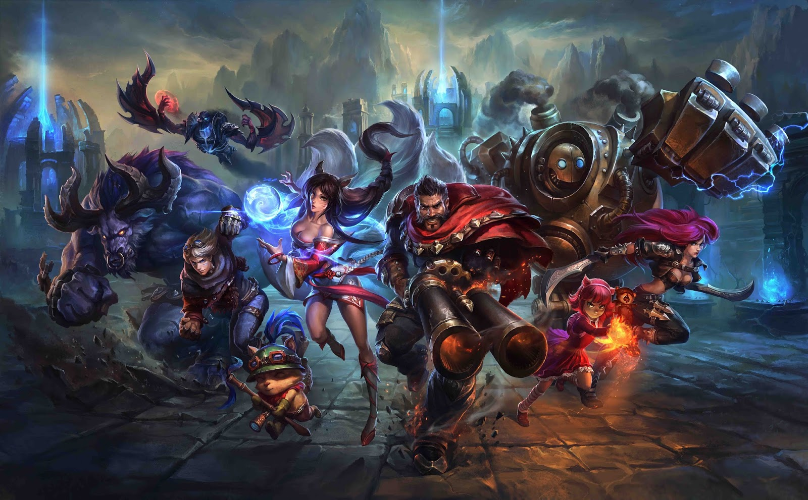

League of Legends es un juego competitivo en línea de ritmo frenético, que fusiona la velocidad y la intensidad de la estrategia en tiempo real con elementos de juegos de rol. Dos equipos de poderosos campeones, cada uno con un diseño y estilo de juegos únicos, compiten cara a cara a través de diversos campos de batalla y modos de juego. Con un plantel de campeones en constante expansión, actualizaciones frecuentes y un emocionante panorama competitivo, League of Legends ofrece posibilidades de juego ilimitadas a usuarios de todos los niveles de habilidad.
Introducción La “top lane”, un sitio en el que el más pequeño error puede costarte toda una oleada de “minions” o aun peor, una torre. En esta línea los “ganks” no son muy frecuentes así que será un uno contra uno donde el ganador será el que mas habilidad tenga, ya que una pequeña ventaja sobre el rival puede conllevar a llevarte una torre y varias kills. ¿Como se consigue esta ventaja? TIRANDOSE DEBAJO DE LA TORRE ENEMIGA POR UNA “KILL”... Con el “farmeo” y el control de línea, así que vamos a hablar sobre el farmeo en la línea, “como zonear”, como “freezear” y como “pushear” la línea y en que momento se debe hacer cada cosa.
Se denomina “pushear” a la acción de matar minions más rápido que el contrario por lo que tu línea avanzará primero.
Una de las ventajas es que subes de nivel antes que el contrario con lo que a nivel 2 o 3 te puede hacer llevarte una “first blood”, haces perder “farm” al contrario ya que la torre dará algunos “last hit” que conllevarán a oro denegado, por otro lado en caso de pelea tendrás mas minions que el contrario por lo que recibirá mas daño y eso a nivel bajo puede suponer una kill. "Entonces pusheo siempre y gano la partida "... No, pushear también tiene desventajas. Si el contrario te “freezea” la línea puede pasar que tus minions de rango se queden pegando con los contrarios a una distancia a la que la torre no les da pero si llevas un “champ” de cuerpo a cuerpo y te acercas a farmearlos la torre si te pega, esto puede suponer perder vida u oro de los minions. Otra desventaja es que al estar avanzado en la línea eres vulnerable a un gank del “jg” contrario.
El freeze consta en tratar de hacer un last hit tan perfecto que tu línea no avanzará, lo que te mantendrá en una zona con una vía de escape fácil.
Harás que el contrario farmee inseguro ya que lo pondrás en una zona de riesgo de gank y dejaras de tú de ser vulnerable. Éste al igual que el push tiene sus desventajas. Si no controlas bien el freeze se te puede ir de las manos y se te retrasara tanto la línea que perderás los minions bajo torre y la misma torre te volverá a pushear la línea
Zonear es que al tener una ventaja sobre tu enemigo, impedir que se acerque a una zona y por ende evitar que farmee (lo que viene siendo privar al enemigo del farm evitando que se acerque).
El enemigo perderá oro y experiencia y esto nos dará una mayor ventaja de oro y nivel, pero la desventaja que nos hacemos muy vulnerables a un gank enemigo.